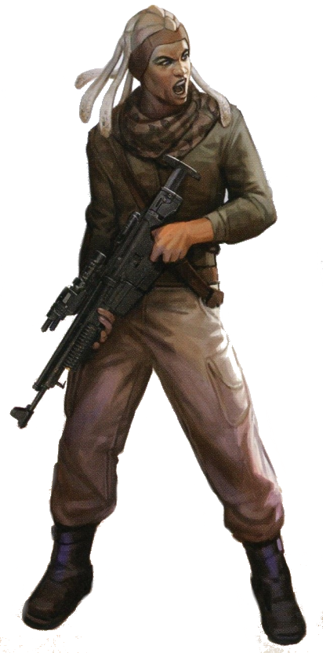

<!DOCTYPE html>
<html>

<head>
  <title>Tholothian</title>

  <meta charset="utf-8">
  <meta name="viewport" content="width=device-width, initial-scale=1, shrink-to-fit=no">

  <link rel="stylesheet" href="https://stackpath.bootstrapcdn.com/bootstrap/4.1.3/css/bootstrap.min.css" integrity="sha384-MCw98/SFnGE8fJT3GXwEOngsV7Zt27NXFoaoApmYm81iuXoPkFOJwJ8ERdknLPMO"
    crossorigin="anonymous">
  <link rel="stylesheet" type="text/css" href="style.css">
</head>

<body>

  <nav class="navbar navbar-expand-lg navbar-dark bg-dark">
    <a class="navbar-brand" href="#">Star Wars Tabletop Codex</a>
    <button class="navbar-toggler" type="button" data-toggle="collapse" data-target="#navbarSupportedContent" aria-controls="navbarSupportedContent"
      aria-expanded="false" aria-label="Toggle navigation">
      <span class="navbar-toggler-icon"></span>
    </button>

    <div class="collapse navbar-collapse" id="navbarSupportedContent">
      <ul class="navbar-nav mr-auto">
        <li class="nav-item">
          <a class="nav-link" href="index.html">Home</a>
        </li>
        <li class="nav-item active" id="nav_active">
          <a class="nav-link" href="species_index.html">Species <span class="sr-only">(current)</span></a>
        </li>
        <li class="nav-item">
          <a class="nav-link" href="equipment_index.html">Equipment</a>
        </li>
        <li class="nav-item">
          <a class="nav-link" href="class_index.html">Classes</a>
        </li>
      </ul>
    </div>
  </nav>


  <br>
  <div class="Container" id="main_box">

    <a href="species_index.html"><button type="button" class="btn btn-outline-dark" id="back_button">&#9668; Back</button></a>

    <h1>Tholothian</h1>
    
    <br>

    <div class="container col-8">

      <div class="card">
        <div class="card-header" id="headingOne">
          <h5 class="mb-0">
            <button class="btn btn-link btn-block" type="button" data-toggle="collapse" data-target="#collapseZero" aria-expanded="false"
              aria-controls="collapseZero" style="color: white; text-decoration: none; text-align: left">
              Stats
            </button>
          </h5>
        </div>
        <div id="collapseZero" class="collapse" aria-labelledby="headingZero">
          <div class="card-body">
            <div class="row justify-content-md-center">
              <div class="col col-lg-2 align" align="center">
                <strong>Bra</strong>
              </div>
              <div class="col col-lg-2" align="center">
                <strong>Agi</strong>
              </div>
              <div class="col col-lg-2" align="center">
                <strong>Int</strong>
              </div>
              <div class="col col-lg-2" align="center">
                <strong>Cun</strong>
              </div>
              <div class="col col-lg-2" align="center">
                <strong>Will</strong>
              </div>
              <div class="col col-lg-2" align="center">
                <strong>Pre</strong>
              </div>
            </div>
            <div class="row justify-content-md-center">
              <div class="col col-lg-2" align="center">
                2
              </div>
              <div class="col col-lg-2" align="center">
                2
              </div>
              <div class="col col-lg-2" align="center">
                2
              </div>
              <div class="col col-lg-2" align="center">
                2
              </div>
              <div class="col col-lg-2" align="center">
                2
              </div>
              <div class="col col-lg-2" align="center">
                2
              </div>
            </div>
            <br>
            <div class="row justify-content-md-center">
              <div class="col col-lg-6">
                <b>Wound Threshold: </b>10 + Brawn
              </div>
            </div>
            <div class="row justify-content-md-center">
              <div class="col col-lg-6">
                <b>Strain Threshold: </b>10 + Willpower
              </div>
            </div>
            <div class="row justify-content-md-center">
              <div class="col col-lg-6">
                <b>Starting Experience: </b>95 XP
              </div>
            </div>
            <div class="row justify-content-md-center">
              <div class="col col-lg-6">
                <p><b>Special Abilities: </b>Tholothians begin the game with one rank in <u>Knowledge (Xenology)</u>. They
                  still may not train Knowledge (Xenology) above rank 2 during character creation.
                </p>
              </div>
            </div>
            <div class="row justify-content-md-center">
              <div class="col col-lg-6">
                <p><b>Cultural Adopters: </b>When making a social skill check to interact with non-Tholothians, Tholothians
                  add automatic [1 Advantage] to the results.</p>
              </div>
            </div>
            <div class="row justify-content-md-center">
              <div class="col col-lg-6">
                <p><b>Natural Roots: </b>When making a check to heal strain while in a natural or wild setting, Tholothians
                  heal one additional strain.</p>
              </div>
            </div>
          </div>
        </div>
      </div>

    </div>
    <br>
    <p>A near-human species from one of the oldest planets (at least politically) in the Republic, the <b>Tholothians</b>
      are an unassuming species, once fully integrated into galactic society, but now contained on their homeworld by the Galactic
      Empire.
    </p>
    <br>
    <div class="accordion" id="accordionExample">

      <div class="card">
        <div class="card-header" id="headingOne">
          <h5 class="mb-0">
            <button class="btn btn-link btn-block" type="button" data-toggle="collapse" data-target="#collapseOne" aria-expanded="false"
              aria-controls="collapseOne" style="color: white; text-decoration: none; text-align: left">
              Physiology
            </button>
          </h5>
        </div>
        <div id="collapseOne" class="collapse" aria-labelledby="headingOne">
          <div class="card-body">
            <p>Tholothians are a humanoid spe￾cies with various shades of darker skin tone and a variety of blue and violet
              eye colors. Instead of hair, they have scales on their heads and several pale tendrils that descend from their
              backs. In all other aspects, they resemble humans in physiology.</p>
          </div>
        </div>
      </div>

      <div class="card">
        <div class="card-header" id="headingTwo">
          <h5 class="mb-0">
            <button class="btn btn-link btn-block" type="button" data-toggle="collapse" data-target="#collapseTwo" aria-expanded="false"
              aria-controls="collapseTwo" style="color: white; text-decoration: none; text-align: left">
              Society
            </button>
          </h5>
        </div>
        <div id="collapseTwo" class="collapse" aria-labelledby="headingTwo">
          <div class="card-body">
            <p>Historically, Tholothian civilization changed and adapted relatively smoothly, especially compared to other
              species. For example, Tholothian astronomers had predicted the existence of other civilizations centuries before
              the first outsider hyperdrive exploration ships encountered Tholoth, and the homeworld did not suffer the culture
              shock that normally comes with initial contact. In fact, Tholothian culture has been remarkably adaptable and
              fluid, changing with the times with less-than-expected backlash, traditionalist outcry, or nativist anger.</p>
            <p>Once highly egalitarian and cosmopolitan, Tholoth’s population was majority but not plurality Tholothian.
              Over centuries, hundreds of cultures and species traveling through the system to settle in the Slice instead
              stayed on the planet. Tholothian society has added bits and pieces of these various cultures into their architecture,
              art, and language (with various loanwords). Linguists can trace historical layers in language, grammar, and
              even verb tenses. Technologically advanced but not obsessively so, Tholoth’s economy has always been slow and
              steady.
            </p>
            <p>This Tholothian cultural fusion changed when the Empire took control of their homeworld. Imperial censors
              removed anything considered foreign (including non-Tholothians) from Tholoth, imposing homogeny onto the language,
              culture, and art. If the censors could trace the origins of the offending material to a non-Tholothian species,
              out it went. The Empire then promoted a different kind of unity; for example, Tholoth’s cities have slowly
              taken on the stark, imposing black and white structures of the Empire.</p>
            <p>This in turn has brought on unprecedented cultural shock. Tholothians struggle now to understand what should
              be considered truly Tholothian. (See "Tholothian Seedpods" Below.) As they resist against the Empire, they
              also resist against this revisionist history, wondering if they should also reject their cosmopolitan past.
              Some scholars fear that even if Tholoth does throw off the yoke of the Empire, Tholothian identity might be
              irrevocably altered. Whether or not this doubt and Imperial influence becomes a permanent part of Tholothian
              society remains to be seen.</p>
          </div>
        </div>
      </div>

      <div class="card">
        <div class="card-header" id="headingThree">
          <h5 class="mb-0">
            <button class="btn btn-link btn-block" type="button" data-toggle="collapse" data-target="#collapseThree" aria-expanded="false"
              aria-controls="collapseThree" style="color: white; text-decoration: none; text-align: left">
              Homeworld
            </button>
          </h5>
        </div>
        <div id="collapseThree" class="collapse" aria-labelledby="headingThree">
          <div class="card-body">
            <p><b>Tholoth</b>, located in the Colonies region at the base of the Slice, has a warm, temperate climate. As
              one of the closest planets in the expansion path of the Slice, Tholoth benefited highly from trade and temporary
              immigration. The Tholothians established strong restrictions upon development; they welcomed immigrants, of
              course, but new construction needed to integrate with their ecosystem and infrastructure. Tholoth’s cities
              took on a cosmopolitan character, blending and integrating different architectural styles that somehow still
              felt Tholothian. As a result, Tholoth has avoided the giant metropolises or ecumenopolises that seem to dominate
              the Core Worlds.</p>
            <p>Certain areas throughout the planet were designated wildlife preserves, and up until the founding of the Galactic
              Empire, Tholoth had maintained an arboreal reputation. The heavier industries remained offworld in the surrounding
              planets of the Tholoth system. Before the Empire, Tholoth was a democracy utilizing a governmental structure
              similar to the Galactic Republic, with a head executive chair and a legislative senate.</p>
            <p>Due to the homeworld’s position in the galaxy and its axial tilt, for half of the year Tholoth’s night sky
              is dominated by the light of the Deep Core, a bright, brilliant ellipse from horizon to horizon, brighter than
              most moons. The other half of the year, Tholoth’s sky faces the arms and the edge of the galaxy, still brilliant,
              but muted and dark.</p>
            <p>Currently under heavy Imperial control, Tholoth, at least to its inhabitants, now feels like a prison. Imperial
              commanders have set up estates here, turning the planet (once a sanctuary to the Jedi) into a vacation spot.
              The local population and economy have been retooled to serve Imperial desires to turn the planet into an officers’
              garden retreat.</p>
          </div>
        </div>
      </div>
      <div class="card">
        <div class="card-header" id="headingFour">
          <h5 class="mb-0">
            <button class="btn btn-link btn-block" type="button" data-toggle="collapse" data-target="#collapseFour" aria-expanded="false"
              aria-controls="collapseFour" style="color: white; text-decoration: none; text-align: left">
              Language
            </button>
          </h5>
        </div>
        <div id="collapseFour" class="collapse" aria-labelledby="headingFour">
          <div class="card-body">
            <p>During the Galactic Republic era, Tholothians spoke Basic, although different communities on the homeworld
              were more isolated than others, lending regional accents to their pronunciation. Because of their cosmopolitan
              nature, Tholothians commonly knew at least one or two additional languages based on need or personal interest.
              Near the end of the Republic, educators on the homeworld headed a movement to preserve the native Tholothian
              language group, but upon Imperial control of the planet, this movement went underground. Many fear the Empire’s
              slow, methodical “Imperialization” of Tholothian culture will cause the death of the Tholothian language as
              well.
            </p>
          </div>
        </div>
      </div>
      <div class="card">
        <div class="card-header" id="headingFive">
          <h5 class="mb-0">
            <button class="btn btn-link btn-block" type="button" data-toggle="collapse" data-target="#collapseFive" aria-expanded="false"
              aria-controls="collapseFive" style="color: white; text-decoration: none; text-align: left">
              Perception of the Force
            </button>
          </h5>
        </div>
        <div id="collapseFive" class="collapse" aria-labelledby="headingFive">
          <div class="card-body">
            <p>As longtime members of the Galactic Republic, Tholothians have had continual contact with the Jedi and the
              Jedi Order. Jedi who wished to remain in contact with the temple on Coruscant but needed to get away from the
              people, smog, and skyscrapers would come to Tholoth to meditate. Some would hike and camp out in the various
              nature preserves, giving them time away from the galaxy without fear of wild, dangerous beasts. The time of
              year could also be useful for meditation due to the night sky: Jedi were known to come on Core or Spiral Peak
              nights to meditate on the light and the dark and the Republic and the Outer Rim, focusing on the inner and
              the outer respectively.</p>
            <p>Since Imperial occupation, Tholoth has gone a little wild. The mountains, forests, hills, trees, and snow-covered
              regions have become unkempt and feral. While the Empire destroyed the obvious Jedi buildings, claiming the
              old aesthetic ruined Tholoth's natural beauty, stormtroopers missed the smaller, hidden refuges. Small cave
              systems with a preternatural sense of peace, a one-story stone structure built by a Jedi monk, or the hot spring
              in the snow-capped mountains all have been grown over by brambles, hidden by rockslides, or buried in ice.
              Some Tholothians still journey to these locations. A few use them for shelter to hide from the Empire. Each
              of them holds a tiny bit of history of the old Jedi Order and perhaps preserves something for a searching Force-sensitive.
            </p>
          </div>
        </div>
      </div>
      <div class="card">
        <div class="card-header" id="headingSix">
          <h5 class="mb-0">
            <button class="btn btn-link btn-block" type="button" data-toggle="collapse" data-target="#collapseSix" aria-expanded="false"
              aria-controls="collapseSix" style="color: white; text-decoration: none; text-align: left">
              Tholothian Seedpods
            </button>
          </h5>
        </div>
        <div id="collapseSix" class="collapse" aria-labelledby="headingSix">
          <div class="card-body">
            <p>Ancient Tholothian cultural practices centered around a durable tree used in their agriculture. When these
              people traveled, they carried at least one seedpod with the blessing that if they found a new home, they would
              tear open the pod, plant the seed, and connect their new home with their old home. Tens of thousands of years
              later, Tholothians who journeyed away from their homeland would continue this tradition, some carrying a single
              seedpod in a pack, integrating them into artistic objects in their homes, or wearing them as jewelry. Stories
              abound that these Hometrees were mystically connected in some way, and that by placing their ear against the
              bark, Tholothians could hear Tholoth’s wind welcoming them home. With the Empire’s dismantling of Tholothian
              culture, this practice has re-emerged stronger than ever in an attempt to get back in touch with their roots
              (so to speak).</p>
          </div>
        </div>
      </div>
    </div>

  </div>

  <script src="https://code.jquery.com/jquery-3.3.1.slim.min.js" integrity="sha384-q8i/X+965DzO0rT7abK41JStQIAqVgRVzpbzo5smXKp4YfRvH+8abtTE1Pi6jizo"
    crossorigin="anonymous"></script>
  <script src="https://cdnjs.cloudflare.com/ajax/libs/popper.js/1.14.3/umd/popper.min.js" integrity="sha384-ZMP7rVo3mIykV+2+9J3UJ46jBk0WLaUAdn689aCwoqbBJiSnjAK/l8WvCWPIPm49"
    crossorigin="anonymous"></script>
  <script src="https://stackpath.bootstrapcdn.com/bootstrap/4.1.3/js/bootstrap.min.js" integrity="sha384-ChfqqxuZUCnJSK3+MXmPNIyE6ZbWh2IMqE241rYiqJxyMiZ6OW/JmZQ5stwEULTy"
    crossorigin="anonymous"></script>

  <div class="footer_bar"></div>
</body>

</html>